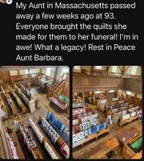

0
0
0


"After nearly a decade of delays and industry skepticism, Tesla's electric big rig is finally rolling out of Nevada's Gigafactory for mass production starting summer 2026," writes Gadget Review. And some truckers who tested the vehicles already love them (as reported by the Wall Street Journal):
Dakota Shearer and Angel Rodriguez, among other pilot drivers, rave about the centered cab that eliminates blind spots during tight maneuvers. The automatic transmission means no more wrestling with 13-gear diesels, reducing physical stress on long hauls. Most surprisingly, the Semi maintains highway speeds on grades where diesel trucks typically crawl at 30 mph. The 500-mile range enables multiple daily round-trips — think Long Beach to Vegas or Inland Empire runs — without range anxiety...
Sure, the Semi costs under $300,000 — roughly double a diesel equivalent — but the math gets interesting quickly. Energy costs drop to $0.17 per mile compared to $0.50-0.70 for diesel fuel. Maintenance requirements shrink dramatically; one fleet reports needing just one mechanic for their electric trucks versus five for 40 diesels... Tesla offers Standard Range (325 miles) and Long Range (500 miles) versions, both handling 82,000-pound gross combined weight at 1.7 kWh per mile efficiency.
The tri-motor setup delivers 800 kW — over 1,000 horsepower equivalent — enabling loaded 0-60 mph acceleration in 20 seconds versus 45-60 for diesel. Fast charging hits 60% capacity in 30 minutes [which Tesla says is 4x faster than other battery-electric trucks] using the new MCS 3.2 standard, while 25 kW ePTO power runs refrigerated trailers without diesel auxiliaries. Charging networks remain the biggest hurdle for widespread adoption. Public charging stations lack the Semi's massive power requirements, limiting long-haul routes. Tesla plans dedicated fast-charging corridors starting this summer, but coverage remains spotty. The lack of sleeper cabs also restricts the Semi to regional freight rather than cross-country hauling.
Production scales to 5,000-15,000 units by 2026, then 50,000 annually — assuming charging infrastructure keeps pace with demand.
Thanks to long-time Slashdot reader schwit1 for sharing the article.
Read more of this story at Slashdot.
13 million people live in Moscow, reports CNN.
But since early March the city "has experienced internet and mobile service outages on a level previously unseen." (Though Wi-Fi access to the internet is still available...) Russian social media "is flooded with jokes and memes about sending letters by carrier pigeons or using smartphones as ping-pong paddles..."
[Moscow residents] complain they cannot navigate around the center or use their favorite mobile apps. The interruptions appear to have had a knock-on effect of making it more difficult to make voice calls or send an SMS. Some are panic-buying walkie-talkies, paper maps, and even pagers.
The latest shutdown builds on similar efforts around the country. For months, mobile internet service interruptions have hit Russia's regions, particularly in provinces bordering Ukraine, which has staged incursions and launched strikes inside Russian territory to counter Russia's full-scale invasion. Some regions have reported not having any mobile internet since summer. But the most recent outages have hit the country's main centers of wealth and power: Moscow and Russia's second city, St. Petersburg.
Public officials claim the blackout of mobile internet service in the capital and other regions is part of a security effort to counter "increasingly sophisticated methods" of Ukrainian attack... Speculation centers on whether the authorities are testing their ability to clamp down on public protest in the case there's an effort to reintroduce unpopular mobilization measures to find fresh manpower for the war in Ukraine; whether mobile internet outages may precede a more sweeping digital blackout; or if the new restrictions reflect an atmosphere of heightened fear and paranoia inside the Kremlin as it watches US-led regime- change efforts unfold against Russian allies such as Venezuela and Iran... On Wednesday, Russian mobile providers sent notifications that there would be "temporary restrictions" on mobile internet in parts of Moscow for security reasons, Russian state news agency RIA-Novosti reported. The measures will last "for as long as additional measures are needed to ensure the safety of our citizens," Kremlin spokesman Dmitry Peskov said on March 11...
As well as banning many social media platforms, Russia blocks calling features on messenger apps such as WhatsApp and Telegram. Roskomnadzor, the country's communications regulator, has introduced a "white list" of approved apps... Russia has also tested what it calls the "sovereign internet," a network that is effectively firewalled from the rest of the world. The disruptions are fueling broader concerns about tightening state control. In parallel with the internet shutdown, the Kremlin has also been pushing to impose a state-controlled messaging app called Max as the country's main portal for state services, payments and everyday communication. There has been speculation the Kremlin may be planning to ban Telegram, Russia's most widely used messaging app, entirely. Roskomnadzor said that it was restricting Telegram for allegedly failing to comply with Russian laws.
"Russia has opened a criminal case against me for 'aiding terrorism,'" Telegram's Russian-born founder Pavel Durov said on X last month. "Each day, the authorities fabricate new pretexts to restrict Russians' access to Telegram as they seek to suppress the right to privacy and free speech...."
The article includes this quote from Mikhail Klimarev, head of the Internet Protection Society and an expert on Russian internet freedom. "In any situation when they (the authorities) perceive some kind of danger for themselves and accept the belief that the internet is dangerous for them, even if it may not be true, they will shut it down," he said. "Just like in Iran."
Read more of this story at Slashdot.
China's orbital outpost Tiangong was completed in 2022 and is hosting up to three astronauts at a time, reports CNN.
But meanwhile U.S. lawmakers are now signaling there's not time to develop and launch a replacement for the International Space Station — considered the signal most expensive object ever built — before its deorbiting in 2030. A recent Senate bill calls for the U.S. to continue funding it as late as 2032, but that bill still awaits approval from the U.S. Senate and the House.
But some private space companies are already building their alternatives:
Private companies that are in the early design and mockup phase of developing these space stations are still waiting on NASA for guidance — and money... [NASA's "Requests for Proposals"] were delayed, in part because it took all of 2025 to cinch a confirmation for Trump's on-again-off-again pick for NASA administrator, Jared Isaacman [confirmed in December]... Similarly, 2025 saw a 45-day government shutdown, the longest in history — adding another hiccup in the space agency's plans to begin formally soliciting proposals from the private sector. Companies now expect that NASA will issue its Request for Proposals in late March or early April, one CEO told CNN...
Several commercial outfits have recently announced big funding influxes aimed at speeding up the development and launch of new orbiting outposts. Houston-based Axiom Space announced a $350 million funding round last month. Its California-based competitor Vast then notched a $500 million raise in early March. Vast is determined to launch a bare-bones station to orbit as soon as possible, with or without federal input, according to the company. "Our approach is to actually not wait for (NASA) and get going and build a minimum viable product, single-module space station called Haven-1, which we're launching into orbit next year," Vast CEO Max Haot told CNN in a phone interview earlier this month. Similarly, Axiom Space is working toward a 2028 launch date for a module that it plans to initially attach to the ISS before breaking off to orbit on its own. A spokesperson told CNN that it the company is "committed" to winning the NASA contract money and may continue pursing such goals even without contract awards.
Still, there's lingering doubt that any of the companies pursuing space stations will be able to stay afloat without securing a coveted NASA contract or at least cinching significant business from the public sector.
The article includes "Another complicating fact: Russia, the United States' primary partner on the ISS, has not pledged to keep operating its half of the space station past 2028." NASA will eventually evaluate proposals for an ISS alternative from Vast, Axiom Space, Jeff Bezos' Blue Origin, Max Space and several competitors including Voyager Technologies, CNN notes, ultimately handing out an estimated $1.5 billion in contracts between 2026 and 2031.
And while those companies may wait decades before a return on their investment, the article includes this quotes from the cofounder/general partner of Balerion Space Ventures, which led the fundraising for Vast. " What's obvious to us is you're going to have multiple vehicles with myriad companies go into space. You're going to have vehicles leaving from celestial bodies, like the moon. And we need a habitat."
Read more of this story at Slashdot.
ReactOS aims to be compatible with programs and drivers developed for Windows Server 2003 and later versions of Microsoft Windows.
And Slashdot reader jeditobe reports that the project has now "announced significant progress in achieving compatibility with proprietary graphics drivers."
ReactOS now supports roughly 90% of GPU drivers for Windows XP and Windows Server 2003, thanks to a series of fixes and the implementation of the KMDF (Kernel-Mode Driver Framework) and WDDM (Windows Display Driver Model) subsystems. Prior to these changes, many proprietary drivers either failed to launch or exhibited unstable behavior. In the latest nightly builds of the 0.4.16 branch, drivers from a variety of manufacturers — including Intel, NVIDIA, and AMD — are running reliably.
The project demonstrated ReactOS running on real hardware, including booting with installed drivers for graphics cards such as Intel GMA 945, NVIDIA GeForce 8800 GTS and GTX 750 Ti, and AMD Radeon HD 7530G. They also highlighted successful operation on mobile GPUs like the NVIDIA Quadro 1000M, with 2D/3D acceleration, audio, and network connectivity all functioning correctly. Further tests confirmed support on less common or older configurations, including a laptop with a Radeon Xpress 1100, as well as high-performance cards like the NVIDIA GTX Titan X.
A key contribution came from a patch merged into the main branch for the memory management subsystem, which improved driver stability and reduced crashes during graphics adapter initialization.
Read more of this story at Slashdot.
Slashdot reader BrianFagioli writes: According to the research firm Gartner, 50% of U.S. consumers say they would prefer to do business with brands that avoid using GenAI in consumer facing content such as advertising and promotional messaging.
The survey of 1,539 Americans, conducted in October 2025, also found growing skepticism about the reliability of online information, with 61% saying they frequently question whether information they use for everyday decisions is trustworthy... Gartner found that 68% of consumers often wonder whether the content they see online is real, while fewer people now rely on intuition alone to judge credibility [only 27%]. Instead, more consumers are actively verifying information and checking sources.
Gartner's senior principal analyst offered suggests discretion for brands trying to use AI. "The brands that win will be the ones that use AI in ways customers can immediately recognize as helpful, while being transparent about when AI is used, what it's doing, and giving customers a clear choice to opt out."
Read more of this story at Slashdot.
A free built-in VPN is coming to Firefox on Tuesday, Mozilla announced this week:
Free VPNs can sometimes mean sketchy arrangements that end up compromising your privacy, but ours is built from our data principles and commitment to be the world's most trusted browser. It routes your browser traffic through a proxy to hide your IP address and location while you browse, giving you stronger privacy and protection online with no extra downloads. Users will have 50 gigabytes of data monthly in the U.S., France, Germany and U.K. to start. Available in Firefox 149 starting March 24.
We also recently shared that Firefox is the first browser to ship Sanitizer API, a new web security standard that blocks attacks before they reach you [for untrusted HTML XSS vulnerabilities].
"The roadmap for Firefox this year is the most exciting one we've developed in quite a while," says Firefox head Ajit Varma. "We're improving the fundamentals like speed and performance. We're also launching innovative new open standards in Gecko to ensure the future of the web is open, diverse, and not controlled by a single engine.
"At the same time we're prioritizing features that give users real power, choice and strong privacy protections, built in a way that only Firefox can. And as always, we'll keep listening, inviting users to help shape what comes next and giving them more reasons to love Firefox."
Two new features coming next week:
Split View puts two webpages side by side in one window, making it easy to compare, copy and multitask without bouncing between tabs. Rolling out in Firefox 149 on March 24.
Tab Notes let you add notes to any tab, another tool to help with multitasking and picking up where you left off. Available in Firefox Labs 149 starting March 24.
And Firefox also released a video this week introducing their new mascot Kit.
Read more of this story at Slashdot.
Jeff Bezos "is in early talks to raise $100 billion," reports the Wall Street Journal, "for a new fund that would buy up manufacturing companies and seek to use AI technology to accelerate their path to automation."
"The Amazon.com founder is meeting with some of the world's largest asset managers to raise funding for the project."
A few months ago, [Bezos] traveled to the Middle East to discuss the new fund with sovereign wealth representatives in the region. More recently, he went to Singapore to raise funding for the effort as well, according to people familiar with the matter. The fund, described in investor documents as a "manufacturing transformation vehicle," is aiming to buy companies in major industrial sectors such as chipmaking, defense and aerospace...
Bezos was recently appointed co-CEO of Project Prometheus, a new startup that is building artificial-intelligence models that can understand and simulate the physical world. Bezos plans to use the company's technology to boost the efficiency and profitability of businesses owned by the fund, a playbook that some investment firms are similarly deploying in sectors such as accounting and property management... [Prometheus has also hired employees from OpenAI and Google DeepMind, the article points out.]
While much of the AI revolution has been focused on large language models, billions of dollars have begun to flow to companies that are seeking to apply spatially focused AI systems toward industries including robotics and manufacturing... Amazon, one of [America's] largest employers, has closed in on the milestone of having as many robots as humans.
Read more of this story at Slashdot.
schwit1 shares a report from the BBC: A French officer has reportedly revealed the location of an aircraft carrier deployed towards the Middle East after publicly registering a run on sports app Strava. French news outlet Le Monde first reported the officer, referred to as Arthur, logged a 35-minute run on the app while exercising on the deck of aircraft carrier Charles de Gaulle on 13 March. He used a smartwatch to record his run and upload the activity to the app, the paper said, creating a map that showed his location. [...] The location of the vessel was said by Le Monde to have been northwest of Cyprus, around 100km (62 miles) from the Turkish coast, with satellite images capturing the carrier and its escort. A representative from the French Armed Forces said the officer's behavior "does not comply with current guidelines," which "sailors are regularly made aware of."
Read more of this story at Slashdot.
An anonymous reader quotes a report from CNBC: The Trump administration on Friday issued (PDF) a legislative framework for a single national policy on artificial intelligence, aiming to create uniform safety and security guardrails around the nascent technology while preempting states from enacting their own AI rules.
The six-pronged outline broadly proposes a slew of regulations on AI products and infrastructure, ranging from implementing new child-safety rules to standardizing the permitting and energy use of AI data centers. It also calls on Congress to address thorny issues surrounding intellectual-property rights and craft rules "preventing AI systems from being used to silence or censor lawful political expression or dissent."
The administration said in an official release that it wants to work with Congress "in the coming months" to convert its framework into a bill that President Donald Trump can sign. The White House wants to codify the framework into law "this year" and believes it can generate bipartisan support, Michael Kratsios, director of the White House Office of Science and Technology Policy, said in an interview with Fox News on Thursday evening. That won't be easy in a deeply divided Congress where Republicans hold thin and often fractious majorities, and where Trump has already urged GOP lawmakers to prioritize his controversial voter-ID bill above all else ahead of the November midterms. BCLP has an interactive map that tracks the proposed, failed and enacted AI regulatory bills from each state.
Read more of this story at Slashdot.
"We have removed all malicious artifacts from the affected registries and channels," Trivy maintainer Itay Shakury posted today, noting that all the latest Trivy releases "now point to a safe version." But "On March 19, we observed that a threat actor used a compromised credential..."
And today The Hacker News reported the same attackers are now "suspected to be conducting follow-on attacks that have led to the compromise of a large number of npm packages..." (The attackers apparently leveraged a postinstall hook "to execute a loader, which then drops a Python backdoor that's responsible for contacting the ICP canister dead drop to retrieve a URL pointing to the next-stage payload.")
The development marks the first publicly documented abuse of an ICP canister for the explicit purpose of fetching the command-and-control (C2) server, Aikido Security researcher Charlie Eriksen said... Persistence is established by means of a systemd user service, which is configured to automatically start the Python backdoor after a 5-second delay if it gets terminated for some reason by using the "Restart=always" directive. The systemd service masquerades as PostgreSQL tooling ("pgmon") in an attempt to fly under the radar...
In tandem, the packages come with a "deploy.js" file that the attacker runs manually to spread the malicious payload to every package a stolen npm token provides access to in a programmatic fashion. The worm, assessed to be vibe-coded using an AI tool, makes no attempt to conceal its functionality. "This isn't triggered by npm install," Aikido said. "It's a standalone tool the attacker runs with stolen tokens to maximize blast radius."
To make matters worse, a subsequent iteration of CanisterWorm detected in "@teale.io/eslint-config" versions 1.8.11 and 1.8.12 has been found to self-propagate on its own without the need for manual intervention... [Aikido Security researcher Charlie Eriksen said] "Every developer or CI pipeline that installs this package and has an npm token accessible becomes an unwitting propagation vector. Their packages get infected, their downstream users install those, and if any of them have tokens, the cycle repeats."
So far affected packages include 28 in the @EmilGroup scope and 16 packages in the @opengov scope, according to the article, blaming the attack on "a cloud-focused cybercriminal operation known as TeamPCP."
Ars Technica explains that Trivy had "inadvertently hardcoded authentication secrets in pipelines for developing and deploying software updates," leading to a situation where attacks "compromised virtually all versions" of the widely used Trivy vulnerability scanner:
Trivy maintainer Itay Shakury confirmed the compromise on Friday, following rumors and a thread, since deleted by the attackers, discussing the incident. The attack began in the early hours of Thursday. When it was done, the threat actor had used stolen credentials to force-push all but one of the trivy-action tags and seven setup-trivy tags to use malicious dependencies... "If you suspect you were running a compromised version, treat all pipeline secrets as compromised and rotate immediately," Shakury wrote.
Security firms Socket and Wiz said that the malware, triggered in 75 compromised trivy-action tags, causes custom malware to thoroughly scour development pipelines, including developer machines, for GitHub tokens, cloud credentials, SSH keys, Kubernetes tokens, and whatever other secrets may live there. Once found, the malware encrypts the data and sends it to an attacker-controlled server. The end result, Socket said, is that any CI/CD pipeline using software that references compromised version tags executes code as soon as the Trivy scan is run... "In our initial analysis the malicious code exfiltrates secrets with a primary and backup mechanism. If it detects it is on a developer machine it additionally writes a base64 encoded python dropper for persistence...."
Although the mass compromise began Thursday, it stems from a separate compromise last month of the Aqua Trivy VS Code extension for the Trivy scanner, Shakury said. In the incident, the attackers compromised a credential with write access to the Trivy GitHub account. Shakury said maintainers rotated tokens and other secrets in response, but the process wasn't fully "atomic," meaning it didn't thoroughly remove credential artifacts such as API keys, certificates, and passwords to ensure they couldn't be used maliciously.
"This [failure] allowed the threat actor to perform authenticated operations, including force-updating tags, without needing to exploit GitHub itself," Socket researchers wrote.
Pushing to a branch or creating a new release would've appeared in the commit history and trigger notifications, Socket pointed out, so "Instead, the attacker force-pushed 75 existing version tags to point to new malicious commits." (Trivy's maintainer says "we've also enabled immutable releases since the last breach.")
Ars Technica notes Trivy's vulnerability scanner has 33,200 stars on GitHub, so "the potential fallout could be severe."
Read more of this story at Slashdot.
"Imagine a newspaper publisher announcing it will no longer allow libraries to keep copies of its paper," writes EFF senior policy analyst Joe Mullin.
"That's effectively what's begun happening online in the last few months."
The Internet Archive — the world's largest digital library — has preserved newspapers since it went online in the mid-1990s... But in recent months The New York Times began blocking the Archive from crawling its website, using technical measures that go beyond the web's traditional robots.txt rules. That risks cutting off a record that historians and journalists have relied on for decades. Other newspapers, including The Guardian, seem to be following suit...
The Times says the move is driven by concerns about AI companies scraping news content. Publishers seek control over how their work is used, and several — including the Times — are now suing AI companies over whether training models on copyrighted material violates the law. There's a strong case that such training is fair use. Whatever the outcome of those lawsuits, blocking nonprofit archivists is the wrong response.
Organizations like the Internet Archive are not building commercial AI systems. They are preserving a record of our history. Turning off that preservation in an effort to control AI access could essentially torch decades of historical documentation over a fight that libraries like the Archive didn't start, and didn't ask for. If publishers shut the Archive out, they aren't just limiting bots. They're erasing the historical record...
Even if courts place limits on AI training, the law protecting search and web archiving is already well established... There are real disputes over AI training that must be resolved in courts. But sacrificing the public record to fight those battles would be a profound, and possibly irreversible, mistake.
Read more of this story at Slashdot.
"Juicier steaks could soon be served up after barley was given the go-ahead to become Britain's first gene-edited crop," reports the Telegraph:
In an effort to fatten up cows and get them to market faster, scientists have altered the DNA of Golden Promise barley to increase its fat content... [Regulators have approved the feeding of that barley to cows for further studies.] [T]he small increase reduces the time it takes for farmers to raise animals for slaughter and increases the amount of milk and meat they produce to make the industry more profitable.
The gene-edited barley is also able to cut the amount of methane a cow produces, [Rothamsted Research professor/biochemist Peter] Eastmond said... Reducing methane from cattle is a major goal of the industry, and Professor Eastmond estimated his barley could cut the methane output from a single cow by up to 15%.
The two genetic tweaks to the barley are believed to alter the gut bacteria in cows' stomachs and reduce the amount of methane-generating microbes, cutting the cows' emissions.... [Eastmond] is also working on applying the same two gene edits to rye grass to create pastures and meadows which are lipid-rich and calorie-dense. This, he said, could lead to entire fields of gene-edited grass which could be grazed by cows, sheep, horses and goats to fatten them up and cut emissions... "It would be better to have this technology in a pasture grass that's grown to supply the livestock and graze it directly."
The barley "has been modified to have a single letter of DNA removed from two different genes to switch them off," the article points out. "No genes have been added to its DNA and it is not considered to be genetically modified."
The article points out that Britain "has launched a push towards more gene-edited crops as a key post-Brexit freedom since splitting from the European Union," noting that U.K. scientists and private companies "have created products such as bread with fewer cancer-causing chemicals, longer-lasting strawberries and bananas, sweeter-tasting lettuce and disease-resistant potatoes, although these are yet to be granted permission to land on supermarket shelves..."
But the EU has so far resisted the sale of any gene-edited crops in the EU.
Thanks to long-time Slashdot reader fjo3 for sharing the article.
Read more of this story at Slashdot.
NASA's Hubble Space Telescope unexpectedly captured a rare, early-stage breakup of comet C/2025 K1 (ATLAS) just days after it first began disintegrating. Phys.org reports: "Sometimes the best science happens by accident," said co-investigator John Noonan, a research professor in the Department of Physics at Auburn University in Alabama. "This comet got observed because our original comet was not viewable due to some new technical constraints after we won our proposal. We had to find a new target -- and right when we observed it, it happened to break apart, which is the slimmest of slim chances."
Noonan didn't know K1 was fragmenting until he viewed the images the day after Hubble took them. "While I was taking an initial look at the data, I saw that there were four comets in those images when we only proposed to look at one," said Noonan. "So we knew this was something really, really special." Hubble caught K1 fragmenting into at least four pieces, each with a distinct coma, the fuzzy envelope of gas and dust that surrounds a comet's icy nucleus. Hubble cleanly resolved the fragments, but to ground-based telescopes, at the time they only appeared as barely distinguishable, bright blobs. [...]
"Never before has Hubble caught a fragmenting comet this close to when it actually fell apart. Most of the time, it's a few weeks to a month later. And in this case, we were able to see it just days after," said Noonan. "This is telling us something very important about the physics of what's happening at the comet's surface. We may be seeing the timescale it takes to form a substantial dust layer that can then be ejected by the gas." The findings have been published in the journal Icarus.
Read more of this story at Slashdot.
CBS News is shutting down its nearly 100-year-old radio news service due to economic pressures and the shift toward digital media and podcasts. Longtime CBS News anchor Dan Rather said: "It's another piece of America that is gone." The Associated Press reports: When it went on the air in September 1927, the service was the precursor to the entire network, giving a youthful William S. Paley a start in the business. Famed broadcaster Edward R. Murrow's rooftop reports during the Nazi bombing of London during World War II kept Americans listening anxiously. Today, CBS News Radio provides material to an estimated 700 stations across the country and is known best for its top-of-the-hour news roundups. The service will end on May 22, the network said Friday.
"Radio is woven into the fabric of CBS News and that's always going to be part of our history," CBS News editor-in-chief Bari Weiss said in delivering the news to the staff. "I want you to know that we did everything we could, including before I joined the company, to try and find a viable solution to sustain the radio operation." But with the radical changes in the media industry, she said, "we just could not find a way to make that possible."
It was unclear how many people will lose their jobs because of the radio shutdown. CBS News was cutting about 6% of its workforce, or more than 60 people, on Friday. It's not the end of turmoil at the network, as parent company Paramount Global is likely to absorb CNN as part of its announced purchase of Warner Bros. Discovery.
Read more of this story at Slashdot.
"The systemd project merged a pull request adding a new birthDate field to the JSON user records managed by userdb in response to the age verification laws of California, Colorado, and Brazil," reports the blog It's FOSS.
They note that the field "can only be set by administrators, not by users themselves" — it's the same record that already holds metadata like realName, emailAddress, and location:
Lennart Poettering, the creator of systemd, has clarified that this change is "an optional field in the userdb JSON object. It's not a policy engine, not an API for apps. We just define the field, so that it's standardized iff people want to store the date there, but it's entirely optional. "
In simple words, this is something that adds a new, optional field that can then be used by other open source projects like xdg-desktop-portal to build age verification compliance on top of, without systemd itself doing anything with the data or making it mandatory to provide. A merge request asking for this change to be repealed was struck down by Lennart, who gave the above-mentioned reasoning behind this, and further noted that people were misunderstanding what systemd is trying to do here.
"It enforces zero policy," Poettering said. "It leaves that up for other parts of the system."
Read more of this story at Slashdot.
Bloomberg : Elon Musk announces Terafab, an Austin-based project run by Tesla and SpaceX to manufacture robotics, AI, and space data center chips for Tesla, xAI, and SpaceX — Elon Musk said his Terafab project — a grand plan to eventually manufacture his own chips for robotics, artificial intelligence …
Bloomberg : Speaking at a Beijing forum, Tim Cook praised Apple's partners and developers in China, a week after Chinese state media labeled the App Store “monopolistic” — Apple Inc. Chief Executive Officer Tim Cook commended Chinese developers and the company's partners in the country …
Ivan Mehta / TechCrunch : Cloaked, which offers security and privacy services such as VPNs, raised a $375M Series B in a mix of equity and growth funding, for enterprise expansion — Consumer-facing security tools often focus on one kind of modality, such as password protection, VPNs, or identity management.
Allison Johnson / The Verge : Hands-on with Gemini task automation on mobile: it's super impressive despite being very slow and failing at some tasks; it can order food, book Ubers, and more — It took nine minutes to order my dinner, but it still feels like the future. … I've been testing out Gemini's new task automation …
Shubham Agarwal / The Guardian : How gig apps like Kled AI, Silencio, Neon Mobile, and Luel AI pay users for data that AI companies can use to train models, from phone calls to videos of places — Gig AI trainers worldwide are selling moments of their lives, including calls and texts, to AI companies for quick cash
Kevin Roose / New York Times : A look at “tokenmaxxing”, a status game where employees at a number of companies compete on leaderboards to show how much AI they're using — An engineer at OpenAI processed 210 billion “tokens” — enough text to fill Wikipedia 33 times — through the company's artificial intelligence models …
Drew Harwell / Washington Post : Social media accounts showing AI-generated women as pro-Trump soldiers, truckers, and cops have gone viral, with thousands appearing to believe they are real — The beautiful Army blonde Jessica Foster has posed with an F-22 Raptor fighter jet, donned camouflage in the desert and walked …
Catherine Perloff / The Information : Sources: advertisers that bought ChatGPT's first ad campaigns say the process was low tech and that they haven't received much data showing if their ads worked — As OpenAI prepares to open up ad sales to more marketers next month, it is trying to address what some advertisers say was lacking in the initial ad sales offering.
Aaron Tilley / The Information : CEO of Halide-maker Lux Optics, Ben Sandofsky, sues his co-founder Sebastiaan de With, now on Apple's design team, alleging improper use of funds and stolen IP — Last summer, Apple held talks to acquire Lux Optics, a tiny startup that makes Halide, one of the most popular and critically acclaimed camera apps in the App Store.
Richard Nieva / Forbes : Vercel, which helps developers host web apps and AI agents, says its run-rate GAAP revenue hit $340M at the end of February, up 86% YoY, amid the AI coding boom — One of the most popular ways to view the Epstein Files, an interface called Jmail that mimics a Gmail inbox, is hosted on Guillermo Rauch's $9.3 billion unicorn Vercel.
Steven Levy / Wired : Inside Palantir's recent developer conference, where it doubled down on a vision of AI built for battlefield advantage as its commercial business soars — As business soars, Palantir is doubling down on a vision of AI built for battlefield advantage—and attracting customers who agree.
Financial Times : Sources: OpenAI aims to grow to about 8,000 employees by the end of 2026, from ~4,500 today, as it seeks to stop Anthropic's momentum with business customers — OpenAI plans to almost double its headcount by the end of the year as it accelerates a push to sell to businesses and gain ground …
Chang Che / The Guardian : A look at China's rapidly expanding robotics sector, which now has roughly 140 companies hoping to build humanoids, fueled by massive state-backed investments — How close are we to the sci-fi vision of autonomous humanoid robots? I visited 11 companies in five Chinese cities to find out
Jerry Neumann / Colossus : Universal recipes for startup success are impossible: once good ideas are widely adopted, founders converge on the same moves, erasing any competitive moats — Startup pundits sold us a failed science of entrepreneurship. The Red Queen offers something better.
New York Times : A review of Polymarket's social media feeds found it has published hundreds of false and misleading posts, as the betting market presents itself as “News 2.0” — A review of the betting market's social media feeds found it has published hundreds of false and misleading posts.